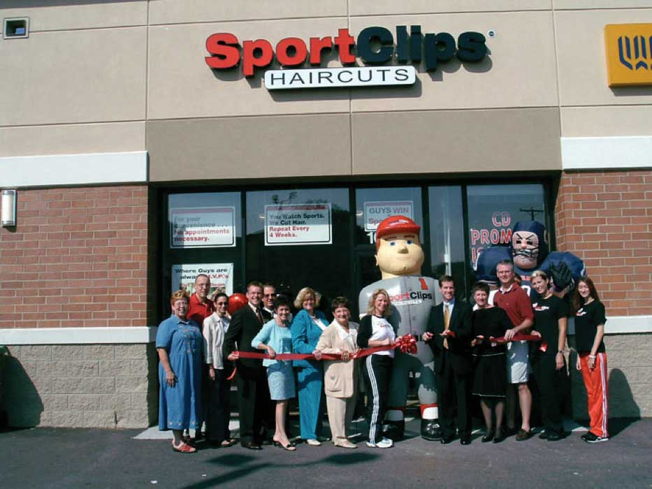
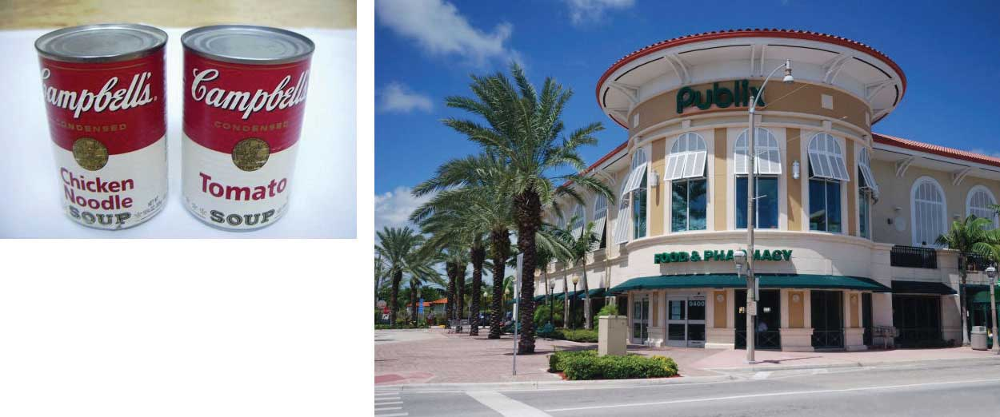
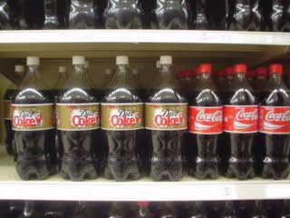

Why do buyers purchase something? Why do you own anything? Many of us own iPods, but few of us do for the sake of owning an iPod. We own one because it delivers music, and we want the music. Or we own one because we have been influenced to buy one. Shortly after the iPod’s introduction, some people undoubtedly purchased the devices because other people thought they were “cool,” and they wanted to be cool by owning one. Now iPods are so ubiquitous that no one gives them a second glance. Yet the impact that iPods have had on the music and entertainment industry has been huge because the product revolutionized how we purchase entertainment.
People buy things to solve needs. In the case of the iPod, the need is to have better access to music, to look cool, or both. OfferingThe entire bundle of a tangible good, intangible service, and price that composes what a company offers to customers. are products and services designed to deliver value to customers—either to fulfill their needs, satisfy their “wants,” or both. We discuss people’s needs in other chapters. In this chapter, we discuss how marketing fills those needs through the creation and delivery of offerings.
Most offerings consist of a productA tangible good that can be bought, sold, and owned., or a tangible good people can buy, sell, and own. Purchasing a classic iPod, for example, will allow you to store up to forty thousand songs or two hundred hours of video. The amount of storage is an example of a featureA characteristic of an offering., or characteristic of the offering. If your playlist consists of twenty thousand songs, then this feature delivers a benefit to you—the benefit of plenty of storage. However, the feature will only benefit you up to a point. For example, you won’t be willing to pay more for the extra storage if you only need half that much. When a feature satisfies a need or want, then there is a benefitThe degree to which a feature satisfies a buyer’s need or desire.. Features, then, matter differently to different consumers based on each individual’s needs. Remember the value equation is different for every customer!
An offering also consists of a priceThe amount exchanged by the buyer to receive the value offered by the product or service., or the amount people pay to receive the offering’s benefits. The price paid can consist of a one-time payment, or it can consist of something more than that. Many consumers think of a product’s price as only the amount they paid; however, the true cost of owning an iPod, for example, is the cost of the device itself plus the cost of the music or videos downloaded onto it. The total cost of ownership (TCO)The total amount of time and money spent to acquire, use, and dispose of an offering., then, is the total amount someone pays to own, use, and eventually dispose of a product.
TCO is usually thought of as a concept businesses use to compare offerings. However, consumers also use the concept. For example, suppose you are comparing two sweaters, one that can be hand-washed and one that must be dry-cleaned. The hand-washable sweater will cost you less to own in dollars but may cost more to own in terms of your time and hassle. A smart consumer would take that into consideration. When we first introduced the personal value equation, we discussed hassle as the time and effort spent making a purchase. A TCO approach, though, would also include the time and effort related to owning the product—in this case, the time and effort to hand wash the sweater.
A serviceAn intangible component of an offering. is an action that provides a buyer with an intangible benefit. A haircut is a service. When you purchase a haircut, it’s not something you can hold, give to another person, or resell. “Pure” services are offerings that don’t have any tangible characteristics associated with them. Skydiving is an example of a pure service. You are left with nothing after the jump but the memory of it (unless you buy a DVD of the event). Yes, a plane is required, and it is certainly tangible. But it isn’t the product—the jump is. At times people use the term “product” to mean an offering that’s either tangible or intangible. Banks, for example, often advertise specific types of loans, or financial “products,” they offer consumers. Yet truly these products are financial services. The term “product” is frequently used to describe an offering of either type.
The intangibility of a service creates interesting challenges for marketers and buyers when they try to judge the relative merits of one service over another. An old riddle asks, “You enter a barbershop to get a haircut and encounter two barbers—one with badly cut hair and the other with a great haircut. Which do you choose?” The answer is the one with the badly cut hair as he cut the hair of the other. But in many instances, judging how well a barber will do before the haircut is difficult. Thus, services can suffer from high variability in quality due to the fact that they are often created as they are received.
Services usually also require the consumer to be physically present or involved. A haircut, a night in a hotel, a flight from here to there—all require the consumer to be physically present and consumption of the service is not separate from the creation of the service. Unlike a physical product, which can be created and purchased off a shelf, a service often (but not always) involves the consumer in its creation.
Another challenge for many services providers is that services are perishable; they can’t be stored. A night at a hotel, for example, can’t be saved and sold later. If it isn’t sold that day, it is lost forever. A barber isn’t really paid for a haircut (to use the riddle) but for time. Services have difficult management and marketing challenges because of their intangibility.
Many tangible products have an intangible service components attached to them, however. When Hewlett-Packard (HP) introduced its first piece of audio testing equipment, a key concern for buyers was the service HP could offer with it. Could a new company such as HP back up the product, should something go wrong with it? As you can probably tell, a service does not have to be consumed to be an important aspect of an offering. HP’s ability to provide good after-sales service in a timely fashion was an important selling characteristic of the audio oscillator, even if buyers never had to use the service.
Figure 6.3
Sport Clips is a barbershop with a sports-bar atmosphere. The company’s slogan is “At Sport Clips, guys win.” So, although you may walk out of Sport Clips with the same haircut you could get from Pro Cuts, the experience you had getting it was very different, which adds value for some buyers.
Source: Sport Clips, used with permission.
What services do you get when you purchase a can of soup? You might think that a can of soup is as close to a “pure” product devoid of services that you can get. But think for a moment about your choices in terms of how to purchase the can of soup. You can buy it at a convenience store, a grocery store like Publix, or online. Your choice of how to get it is a function of the product’s intangible service benefits, such as the way you are able to shop for it.
Figure 6.4
Even what seems like a “pure” product like a can of soup can have an intangible service component associated with it, such as the way you are able to shop for it—say, at a convenience store, a grocery store like Publix, or perhaps online.
Source: Wikimedia Commons.
From the traditional product-dominantAn approach to products and offerings that clearly separates the physical product from services and from price. perspective of business, marketers consider products, services, and prices as three separate and distinguishable characteristics. To some extent, they are. HP could, for example, add or strip out features from a piece of testing equipment and not change its service policies or the equipment’s price. The product-dominant marketing perspective has its roots in the Industrial Revolution. During this era, businesspeople focused on the development of products that could be mass produced cheaply. In other words, firms became product-orientedAn approach to business that centers on capturing business by focusing on creating and manufacturing better products at lower prices., meaning that they believed the best way to capture market share was to create and manufacture better products at lower prices. Marketing remained oriented that way until after World War II.
Who determines which products are better? Customers do, of course. Thus, taking a product-oriented approach can result in marketing professionals focusing too much on the product itself and not enough on the customer or service-related factors that customers want. Most customers will compare tangible products and the prices charged for them in conjunction with the services that come with them. In other words, the complete offering is the basis of comparison. So, although a buyer will compare the price of product A to the price of product B, in the end, the prices are compared in conjunction with the other features and services of the products. The dominance of any one of these dimensions is a function of the buyer’s needs.
The advantage of the service-dominantAn approach to offerings that integrates the physical product, attendant services, and price into the total offering. approach is that it integrates the product, price, and service dimensions of an offering. This integration helps marketers think more like their customers, which can help them add value to their firm’s products. In addition to the offering itself, marketers should consider what services it takes for the customer to acquire their offerings (e.g., the need to learn about the product from a sales clerk), to enjoy them, and to dispose of them (e.g., someone to move the product out of the house and haul it away), because each of these activities create costs for their customers—either monetary costs or time and hassle costs.
Critics of the service-dominant approach argue that the product-dominant approach also integrated services (though not price). The argument is that at the core of an offering is the product, such as an iPod, as illustrated in Figure 6.6. The physical product, in this case an iPod, is the core productThe physical component of an offering.. Surrounding it are services and accessories, called the augmented productServices and accessories that improve the core product’s ability to deliver benefits., that support the core product. Together, these make up the complete product. One limitation of this approach has already been mentioned; price is left out. But for many “pure” products, this conceptualization can be helpful in bundling different augmentations for different markets.
Figure 6.6

A core product is the central functional offering, but it may be augmented by various accessories or services, known as the augmented product.
Customers are now becoming more involved in the creation of benefits. Let’s go back to that “pure” product, Campbell’s Cream of Chicken Soup. The consumer may prepare that can as a bowl of soup, but it could also be used as an ingredient in making King Ranch Chicken. As far as the consumer goes, no benefit is experienced until the soup is eaten; thus, the consumer played a part in the creation of the final “product” when the soup was an ingredient in the King Ranch Chicken. Or suppose your school’s cafeteria made King Ranch Chicken for you to consume; in that case you both ate a product and consumed a service.
Some people argue that focusing too much on the customer can lead to too little product development or poor product development. These people believe that customers often have difficulty seeing how an innovative new technology can create benefits for them. Researchers and entrepreneurs frequently make many discoveries and then products are created as a result of those discoveries. 3M’s Post-it Notes are an example. The adhesive that made it possible for Post-it Notes to stick and restick was created by a 3M scientist who was actually in the process of trying to make something else. Post-it Notes came later.
A product’s technology platformThe core technology that is the basis for an offering or product. is the core technology on which it is built. Take for example, the iPod, which is based on MP3 technology. In many cases, the development of a new offering is to take a technology platform and rebundle its benefits in order to create a different version of an already-existing offering. For example, in addition to the iPod Classic, Apple offers the Shuffle and the Nano. Both are based on the same core technology.
In some instances, a new offering is based on a technology platform originally designed to solve different problems. For example, a number of products originally were designed to solve the problems facing NASA’s space-traveling astronauts. Later, that technology was used to develop new types of offerings. EQyss’s Micro Tek pet spray, which stops pets from scratching and biting themselves, is an example. The spray contains a trademarked formula developed by NASA to decontaminate astronauts after they return from space.
Figure 6.8
The formula in EQyss’s Micro Tek pet grooming spray was originally developed by NASA to decontaminate astronauts after they return from space.
Source: Photo by Amy Ray, used with permission.
A technology platform isn’t limited to tangible products. Knowledge can be a type of technology platform in a pure services environment. For example, the “bioesthetic” treatment model was developed to help people who suffer from TMJ, a jaw disorder that makes chewing painful. A dentist can be trained on the bioesthetic technology platform and then provide services based on it. There are, however, other ways to treat TMJ that involve other platforms, or bases of knowledge and procedures, such as surgery.
Few firms survive by selling only one product. Most firms sell several offerings designed to work together to satisfy a broad range of customers’ needs and desires. A product lineA group of offerings that serve similar needs and are sold under the same name. is group of related offerings. Product lines are created to make marketing strategies more efficient. Campbell’s condensed soups, for example, are basic soups sold in cans with red labels. But Campbell’s Chunky is a ready-to-eat soup sold in cans that are labeled differently. Most consumers expect there to be differences between Campbell’s red-label chicken soup and Chunky chicken soup, even though they are both made by the same company.
A product line can be broad, as in the case of Campbell’s condensed soup line, which consists of several dozen different flavors. Or, a product line can be narrow, as in the case of Apple’s iPod line, which consists of only a few different MP3 devices. How many offerings there are in a single product line—that is, whether the product line is broad or narrow—is called line depthThe number of variations in a single product line.. When new but similar products are added to the product line, it is called a line extensionA new idea or offering that occurs when a company comes out with another model (related product or service) based on the same platform and brand as one of its other products.. If Apple introduces a new MP3 player to the iPod family, that would be a line extension. Companies can also offer many different product lines. Line breadthThe number of different, or distinct, product lines offered by a company. (or width) is a function of how many different, or distinct, product lines a company has. For example, Campbell’s has a Chunky soup line, condensed soup line, Kids’ soup line, Lower Sodium soup line, and a number of nonsoup lines like Pace Picante sauces, Prego Italian sauces, and crackers. The entire assortment of products that a firm offers is called the product mixThe entire assortment of products that a firm offers..
As Figure 6.9 "Product Levels" shows, there are four offering levels. Consider the iPod Shuffle. There is (1) the basic offering (the device itself), (2) the offering’s technology platform (the MP3 format or storage system used by the Shuffle), (3) the product line to which the Shuffle belongs (Apple’s iPod line of MP3 music players), and (4) the product category to which the offering belongs (MP3 players as opposed to iPhones, for example).
Figure 6.9 Product Levels

So how does a technology platform become a new product or service or line of new products and services? In another chapter, we take a closer look at how companies design and develop new offerings.
Companies market offerings composed of a combination of tangible and intangible characteristics for certain prices. During the Industrial Revolution, firms focused primarily on products and not so much on customers. The service-dominant perspective to marketing integrates three different dimensions of an offering—not only the product but also its price and the services associated with it. This perspective helps marketers think more like their customers, which helps firms add value to their offerings. An offering is based on a technology platform, which can be used to create a product line. A product line is a group of similar offerings. A product line can be deep (many offerings of a similar type) and/or broad (offerings that are very different from one another and cover a wide range of customers’ needs). The entire assortment of products that a company offers is called the product mix.
Products and services can be categorized in a number of ways. We will use these categories throughout the book because they are the most commonly referred to categories by marketers and because there are marketing implications for each. Consumer offerings fall into four general categories:
In this section, we will discuss each of these categories. Keep in mind that the categories are not a function of the characteristic of the offerings themselves. Rather, they are a function of how consumers want to purchase them, which can vary from consumer to consumer. What one consumer considers a shopping good might be a convenience good to another consumer.
Convenience offeringsLow-priced, frequently purchased products and services that require little shopping effort. are products and services consumers generally don’t want to put much effort into shopping for because they see little difference between competing brands. For many consumers, bread is a convenience offering. A consumer might choose the store in which to buy the bread but be willing to buy whatever brand of bread the store has available. Marketing convenience items is often limited to simply trying to get the product in as many places as possible where a purchase could occur.
Figure 6.10

The Life Savers Candy Company was formed in 1913. Its primary sales strategy was to create an impulse to buy Life Savers by encouraging retailers and restaurants to place them next to their cash registers and include a nickel—the purchase price of a roll of Life Savers—in the customer’s change.
Source: Wikimedia Commons.
Closely related to convenience offerings are impulse offeringsAn offering that is purchased on impulse, without prior planning., or items purchased without any planning. The classic example is Life Savers, originally manufactured by the Life Savers Candy Company, beginning in 1913. The company encouraged retailers and restaurants to display the candy next to their cash registers and to always give customers a nickel back as part of their change so as to encourage them to buy one additional item—a roll of Life Savers, of course!
A shopping offeringAn offering for which the consumer will make an effort to compare various firms’ offerings and select a brand. is one for which the consumer will make an effort to compare and select a brand. Consumers believe there are differences between similar shopping offerings and want to find the right one or the best price. Buyers might visit multiple retail locations or spend a considerable amount of time visiting Web sites and reading reviews about the product, such as the reviews found in Consumer Reports.
Consumers often care about brand names when they’re deciding on shopping goods. If a store is out of a particular brand, then another brand might not do. For example, if you prefer Crest Whitening Expressions toothpaste and the store you’re shopping at is out of it, you might put off buying the toothpaste until your next trip to the store. Or you might go to a different store or buy a small tube of some other toothpaste until you can get what you want. Note that even something as simple as toothpaste can become a shopping good for someone very interested in her dental health—perhaps after she’s read online product reviews or consulted with her dentist. That’s why companies like Procter & Gamble, the maker of Crest, work hard to influence not only consumers but also people like dentists who influence the sale of their products.
Figure 6.11

If your favorite toothpaste is Crest’s Whitening Fresh Mint, you might change stores if you don’t find it on the shelves of your regular store.
Source: Wikimedia Commons.
Specialty offeringsAn offering that is highly differentiated from other offerings and is designed to satisfy a similar need or want. are highly differentiated offerings, and the brands under which they are marketed are very different across companies, too. For example, an Orange County Chopper or Iron Horse motorcycle is likely to be far different feature-wise than a Kawasaki or Suzuki motorcycle. Typically, specialty items are available only through limited channels. For example, exotic perfumes available only in exclusive outlets are considered specialty offerings. Specialty offerings are purchased less frequently than convenience offerings. Therefore, the profit margin on them tends to be greater.
Note that while marketers try to distinguish between specialty offerings, shopping offerings, and convenience offerings, it is the consumer who ultimately makes the decision. Therefore, what might be a specialty offering to one consumer may be a convenience offering to another. For example, one consumer may never go to Sport Clips or Ultra-Cuts because hair styling is seen as a specialty offering. A consumer at Sport Clips might consider it a shopping offering, while a consumer for Ultra-Cuts may view it as a convenience offering. The choice is the consumer’s.
Figure 6.12

Specialty offerings, such as this custom-made motorcycle, are highly differentiated. People will go to greater lengths to shop for these items and are willing to pay more for them.
Source: Wikimedia Commons.
Marketing specialty goods requires building brand name recognition in the minds of consumers and educating them about your product’s key differences. This is critical. For fashion goods, the only point of difference may be the logo on the product (for example, an Izod versus a Polo label). Even so, marketers spend a great deal of money and effort to try to get consumers to perceive these products differently than their competitors’.
Unsought offeringsAn offering consumers don’t typically shop for until it is needed. Examples include funeral and towing services. are those that buyers do not generally want to have to shop for until they need them. Towing services and funeral services are generally considered unsought offerings. Marketing unsought items is difficult. Some organizations try to presell the offering, such as preneed sales in the funeral industry or towing insurance in the auto industry. Other companies, such as insurance companies, try to create a strong awareness among consumers so that when the need arises for these products, consumers think of their organizations first.
Convenience offerings, shopping offerings, specialty offerings, and unsought offerings are the major types of consumer offerings. Convenience offerings often include life’s necessities (bread, milk, fuel, and so forth), for which there is little difference across brands. Shopping goods do vary, and many consumers develop strong preferences for some brands versus others. Specialty goods are even more exclusive. Unsought goods are a challenge for marketers because customers do not want to have to shop for them until they need them.
Just like there are different types of consumer offerings, there are different types of business-to-business (B2B) offerings as well. But unlike consumer offerings, which are categorized by how consumers shop, B2B offerings are categorized by how they are used. The primary categories of B2B offerings are
A capital equipment offeringTangible equipment business purchases that are depreciated. is any equipment purchased and used for more than one year and depreciated over its useful life. Machinery used in a manufacturing facility, for example, would be considered capital equipment. Professionals who market capital equipment often have to direct their communications to many people within the firms to which they are selling because the buying decisions related to the products can be rather complex and involve many departments. From a marketing standpoint, deciding who should get what messages and how to influence the sale can be very challenging.
Raw materials offeringsRaw material products firms offer other firms so they can make a product or provide a service. These offerings are processed only to the point required for economic handling and distribution. are materials firms offer other firms so they can make a product or provide a service. Raw materials offerings are processed only to the point required to economically distribute them. Lumber is generally considered a raw material, as is iron, nickel, copper, and other ores. If iron is turned into sheets of steel, it is called a manufactured materialA material that has been processed into a finished good but is not a stand-alone product; it still has to be incorporated into something else to be usable. because it has been processed into a finished good but is not a stand-alone product; it still has to be incorporated into something else to be usable. Both raw and manufactured materials are then used in the manufacture of other offerings.
Raw materials are often thought of as commodities, meaning that there is little difference among them. Consequently, the competition to sell them is based on price and availability. Natuzzi is an Italian company that makes leather furniture. The wood Natuzzi buys to make its sofas is a commodity. By contrast, the leather the company uses is graded, meaning each piece of leather is rated based on quality. To some extent, the leather is still a commodity, because once a firm decides to buy a certain grade of leather, every company’s leather within that grade is virtually the same.
An original equipment manufacturer (OEM)A company that assembles and manufactures a product into its final form. is a manufacturer or assembler of a final product. An OEM purchases raw materials, manufactured materials, and component parts and puts them together to make a final product. OEM offerings or componentsProducts, or parts, sold by one manufacturer to another that get built into a final product without further modification., like an on/off switch, are components, or parts, sold by one manufacturer to another that get built into a final product without further modification. If you look at that picture of the Natuzzi couch, you may notice that it sits on metal feet. The metal feet are probably made by a manufacturer other than Natuzzi, making the feet an OEM component. Dell’s hard drives installed in computer kiosks like the self-service kiosks in airports that print your boarding passes are another example of OEM components.
Maintenance, repair, and operations (MRO)Offerings used to maintain, repair, and operate the physical assets of an organization. offerings refer to products and services used to keep a company functioning. Janitorial supplies are MRO offerings as is hardware used to repair any part of a building or equipment. MRO items are often sold by distributors. However, you can buy many of the same products at a retail store. For example, you can buy nuts and bolts at a hardware store. A business buyer of nuts and bolts, however, will also need repair items that you don’t, such as very strong solder used to weld metal. For convenience sake, the buyer would prefer to purchase multiple products from one vendor rather than driving all over town to buy them. So the distributor sends a salesperson to see the buyer. Most distributors of MRO items sell thousands of products, set up online purchasing Web sites for their customers, and provide a number of other services to make life easier for them.
Facilitating offeringsOfferings that support an organization’s ability to do business but do not go into the final product. include products and services that support a company’s operations but are not part of the final product it sells. Marketing research services, banking and transportation services, copiers and computers, and other similar products and services fall into this category. Facilitating offerings might not be central to the buyer’s business, at least not the way component parts and raw materials are. Yet to the person who is making the buying decision, these offerings can be very important. If you are a marketing manager who is selecting a vendor for marketing research or choosing an advertising agency, your choice could be critical to your own personal success. For this reason, many companies that supply facilitating offerings try to build strong relationships with their clients.
Business buyers purchase various types of offerings to make their own offerings. Some of the types of products they use are raw materials, manufactured materials, and component parts and assemblies, all of which can become part of an offering. MRO (maintenance, repair, and operations) offerings are those that keep a company’s depreciable assets in working order. Facilitating offerings are products and services a company purchases to support its operations but are not part of the firm’s final product.
What comes to mind when someone says Coke or Nike or Microsoft? According to BusinessWeek magazine, the Coca-Cola brand is the strongest brand in the world. However, a global study of consumers sponsored by Reuters found that Apple has the best brand. What is a “brand” and what do these studies mean when they report that one brand is the strongest or the best?
We have mentioned brands periodically throughout this chapter. But what is a brand? A brandA name, picture, design, or symbol, or combination of those elements, used by a seller to differentiate its offerings from competitors’. is a name, picture, design, or symbol, or combination of those items, used by a seller to identify its offerings and to differentiate them from competitors’ offerings. BrandingA set of activities designed to create a brand and position it in the minds of consumers. is the set of activities designed to create a brand and position it in the minds of consumers. Did you know that The Beatles started a recording studio called Apple? When Apple Computer (the iPod company) was formed, Apple Corp., Ltd. (the Beatles’ recording studio), sued Apple Computer because two companies with the same name can create confusion among consumers. This wasn’t much of a problem when Apple was only selling computers, but following the release of the iPod and launch of Apple’s iTunes program, a case could be made that the companies’ offerings are similar enough for consumers to confuse the two companies and their products. In fact, it wasn’t until very recently that the lawsuit over the name was settled, some thirty years after the initial lawsuit was filed. Nonetheless, the situation signifies how important brand names are to the companies that own them.
A successful branding strategy is one that accomplishes what Coke and Apple have done—it creates consumer recognition of what the brand (signified by its name, picture, design, symbol, and so forth) means. Consequently, when marketing professionals are considering whether a potential new offering fits a company’s image, they are very concerned about whether the offering supports the organization’s brand and position in the mind of the consumer. For this reason, many consider branding to be much more than how the product is packaged or labeled, and they are right. Characteristics of the offering, such as pricing and quality, have to support the brand’s position. If Apple (the brand) stands for innovation, then products and services have to be innovative. But branding itself refers to strategies that are designed to create an image and position in the consumers’ minds.
A brand nameThe spoken part of an identity used to describe of a brand., like Apple, is the spoken part of a brand’s identity. A brand markA symbol or logo used to identify a brand. is the symbol, such as Coke’s wave or Apple Computer’s multicolor apple (not to be confused with Apple Records’ green apple), associated with a brand. Brand names and brand marks are important to companies because consumers use them to make choices. That’s why it was important to sort out the Apple brand. Each company wanted to make sure that consumers were getting what they wanted and would know what each brand meant.
An important decision companies must make is under which brand a new offering will be marketed. For example, Black & Decker makes power tools for consumers under its Black & Decker brand, while tools for more serious do-it-yourselfers and professionals are under its Dewalt brand. If Black & Decker decided to add to its Dewalt line new products such as coolers, portable radios, CD players, and other accessories construction professionals might find useful at a job site, the company would be creating a brand extension. A brand extensionThe process of utilizing an existing brand name or brand mark for a new product category. involves utilizing an existing brand name or brand mark for a new product category.
Why would Black & Decker add these accessories to the Dewalt line? If the company did, it would be because Dewalt already has a good reputation for high quality, long-lasting durability, and performance among construction professionals. These same professionals would trust the Dewalt brand to deliver. How a company like Black & Decker goes about building this trust is the subject of later chapters. For now, let’s consider whether it is better for a company to market a new product via a brand extension or create an entirely new brand for the product.
One thing firms have to consider when they’re branding a new offering is the degree of cannibalization that can occur across products. CannibalizationWhen a new product takes sales away from the same company’s existing products. occurs when a firm’s new offering eats into the sales of one of its older offerings. (Ideally, when you sell a new product, you hope that all of its sales come from your competitors’ buyers or buyers that are new to the market.) A completely new offering will not result in cannibalization, whereas a line extension likely will. A brand extension will also result in some cannibalization if you sell similar products under another brand. For example, if Black & Decker already had an existing line of coolers, portable radios, and CD players when the Dewalt line of them was launched, the new Dewalt offerings might cannibalize some of the Black & Decker offerings.
Some marketers argue that cannibalization can be a good thing because it is a sign that a company is developing new and better offerings. These people believe that if you don’t cannibalize your own line, then your competitors will.
Another set of questions to consider involves the packaging on which a brand’s marks and name will be prominently displayed. Sometimes the package itself is part of the brand. For example, the curvaceous shape of Coca-Cola’s Coke bottle is a registered trademark. If you decide to market your beverage in a similar-shaped bottle, Coca-Cola’s attorneys will have grounds to sue you.
Figure 6.15
Sometimes the package itself is part of a licensed brand. Coke’s curvaceous bottle is an example.
Source: Wikimedia Commons.
Packaging has to fulfill a number of important functions, including
Sometimes packaging can fulfill other functions, such as serving as part of an in-store display designed to promote the offering.
Primary packagingPackaging designed to hold a single retail unit of a product. holds a single retail unit of a product. For example, a bottle of Coke, a bag of M&Ms, or a ream of printer paper (five hundred sheets) are all examples of primary packages. Primary packaging can be used to protect and promote products and get the attention of consumers. Primary packaging can also be used to demonstrate the proper use of an offering, provide instructions on how to assemble the product, or any other needed information. If warning or nutrition labels are required, they must be on the primary packaging. Primary packaging can be bundled together as well. Consumers can buy bottles of Coke sold in six-packs or cans of Coke in twelve-packs, for example.
Secondary packagingPackaging designed to hold a single wholesale unit of a product. holds a single wholesale unit of a product. A case of M&M bags is an example, as are cartons of reams of paper. Secondary packaging is designed more for retailers than consumers. It does not have to carry warning or nutrition labels but is still likely to have brand marks and labels. Secondary packaging further protects the individual products during shipping.
Tertiary packagingPackaging designed for the shipping and efficiently handling of large quantities of a product. is packaging designed specifically for shipping and efficiently handling large quantities. When a Coca-Cola bottler ships cases of Cokes to a grocery store, they are stacked on pallets (wooden platforms) and then wrapped in plastic. Pallets can be easily moved by a forklift truck and can even be moved within the grocery store by a small forklift.
A product’s packaging can benefit the customer beyond just protecting the offering while it’s being shipped. No-spill caps, for example, can make it easier for you to use your laundry detergent or prevent spills when you’re adding oil to your car’s engine. And, as we have noted, secondary packaging (and also tertiary packaging) can serve as part of an in-store display, thereby adding value for your retailers.
A brand is a name, picture, design, or symbol, or combination of those items, used by a seller to identify its offerings and differentiate them from competitors’ offerings. Branding is the set of activities designed to create a brand and position it relative to competing brands in the minds of consumers. An important decision companies must make is under which brand a new offering will be marketed. A brand extension involves utilizing an existing brand name or brand mark for a new product or category (line) of products. Cannibalization occurs when a company’s new offering eats into the sales of one of its older offerings. It is something to be avoided in most cases, but it can also be a sign of progress because it means a company is developing new and better products. Packaging protects products from damage, contamination, leakage, and tampering, but it is also used to communicate the brand and its benefits, product warnings, and proper use.
Managing all of a company’s offerings presents a number of challenges. Depending on the size of the company and the breadth of the company’s offerings, several positions may be needed.
A brand manager is one such position. A brand managerA person responsible for all business decisions regarding offerings within one brand. A brand manager is often charged with running his or her brand as if it is its own separate business. is the person responsible for all business decisions regarding offerings within one brand. By business decisions, we mean making decisions that affect profit and loss, which include such decisions as which offerings to include in the brand, how to position the brand in the market, pricing options, and so forth. Indeed, a brand manager is often charged with running the brand as if it were its own separate business.
A brand manager is much more likely to be found in consumer marketing companies. Typically, B2B companies do not have multiple brands so the position is not common in the B2B environment. What you often find in a B2B company is a product managerSomeone with business responsibility for a particular product or product line. Like brand managers, product managers must make decisions, such as which offerings to include, advertising selection, and others., someone with business responsibility for a particular product or product line. Like the brand manager, the product manager must make many business decisions, such as which offerings to include, advertising selection, and so on. Companies with brand managers include Microsoft, Procter & Gamble, SC Johnson, Kraft, Target, General Mills, and ConAgra Foods. Product managers are found at Xerox, IBM, Konica-Minolta Business Solutions, Rockwell International, and many others.
The University of Georgia was the first to launch a graduate program in brand management, but the only major program now being taught in the United States is at the University of Wisconsin. The program is managed through the university’s Center for Brand and Product Management. Most brand managers simply have an undergraduate degree in marketing, but it helps to have a strong background in either finance or accounting because of the profitability and volume decisions brand managers have to make. In the United Kingdom, a number of school have undergraduate degree programs specializing in brand management, as does Seneca College in Toronto, Canada.
In some companies, a category managerSomeone responsible for managing a broad group of products that may belong to multiple manufacturers. has responsibility for business decisions within a broad grouping of offerings. For example, a category manager at SC Johnson may have all home cleaning products, which would mean that brands such as Pledge, Vanish, Drano, Fantastik, Windex, Scrubbing Bubbles, and Shout would be that person’s responsibility. Each of those brands may be managed by brand manager who then reports directly to the category manager.
At the retail level, a category manager at each store is responsible for more than just one manufacturer’s products. The home cleaning category manager would have responsibility for offerings from SC Johnson, as well as Procter & Gamble, Colgate-Palmolive, and many other producers.
Another option is to create a market managerSomeone responsible for managing efforts within a particular market, such as a geographic market or another grouping of customers into a market (e.g., a single industry or size)., who is responsible for business decisions within a market. In this case, a market can be defined as a geographic market or region; a market segment, such as a type of business; or a channel of distribution. For example, SC Johnson could have regional insect control managers. Regional market managers would make sense for insect control because weather has an influence on which bugs are pests at any given time. For example, a southern regional manager would want more inventory of the repellent Off! in March because it is already warm and the mosquitoes are already breeding and biting in the southern United States.
In B2B markets, a market manager is more likely to be given responsibility for a particular market segment, such as all hospital health care professionals or doctor’s offices. All customers such as these (retail, wholesale, and so forth) in a particular industry compose what’s called a vertical marketB2B customers that compose a particular industry, such as the health care industry., and the managers of these markets are called vertical market managersMarketing managers who oversee B2B products sold to a particular industry.. B2B companies organize in this way because
Because magazines, Web sites, and trade shows are organized to serve specific industries or even specific positions within industries, B2B marketers find vertical market structures for marketing departments to be more efficient than organizing by geography.
Market managers sometimes report to brand managers or are a part of their firms’ sales organizations and report to sales executives. Market managers are less likely to have as much flexibility in terms of pricing and product decisions and have no control over the communication content of marketing campaigns or marketing strategies. These managers are more likely to be tasked with implementing a product or brand manager’s strategy and be responsible for their markets. Some companies have market managers but no brand managers. Instead, marketing vice presidents or other executives are responsible for the brands.
Brand managers decide what products are to be marketed and how. Other important positions include category managers, market managers, and vertical market managers. Category managers are found in consumer markets, usually in retail. Market managers can be found in both consumer markets and B2B markets. However, vertical market managers are found only in B2B markets. Some companies have market managers but no brand managers. Instead, a vice president of marketing or other executive is responsible for the brands.